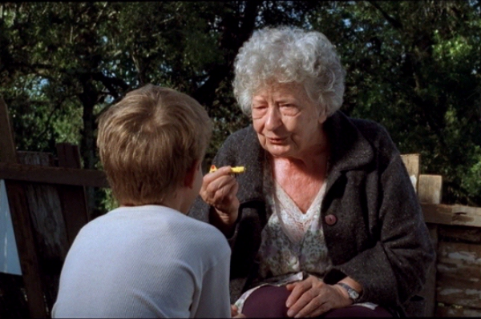

DONA CRISTINA PERDEU A MEMÓRIA (Doña Cristina ha perdido la memoria)
|
(35 mm, 13 min, color, 2002) Antônio, um menino de 8 anos, descobre que sua vizinha Cristina, de 80, conta histórias sempre diferentes sobre a sua vida, os nomes de seus parentes e os santos do dia. E Dona Cristina acredita que Antônio pode ajudá-la a recuperar a memória perdida. |
 Foto por Alex Sernambi: Pedro Tergolina e Lissy Brock |
{kind=link}
ASSISTIR (PORTA CURTAS)
Dirección: Ana Luiza Azevedo
Producción Executiva: Nora Goulart e Luciana Tomasi
Guión: Ana Luiza Azevedo, Jorge Furtado e Rosângela Cortinhas
Dirección de Fotografia: Alex Sernambi
Dirección de Arte: Fiapo Barth
Música: Gustavo Finkler
Montaje: Giba Assis Brasil
Uma Producción da Casa de Cinema PoA
Elenco Principal
Lissy Brock (Dona Cristina)
Pedro Tergolina (Antônio)
Prêmios
- 30º Festival de Gramado, 2002:
Melhor Dirección de Curta; Melhor Dirección de Arte de Curta.
- 13º Festival Internacional de Curtas de São Paulo, 2002:
- Destaque do Júri Popular (entre os 10 filmes mais votados), Prêmio Aquisição Canal Brasil
- 35º Festival do Cinema Brasileiro de Brasília, 2002:
Melhor Curta (Prêmio da Crítica), Prêmio ANDI Cinema pela Infância. - 3º Fluxus, Festival Internacional de Cinema na Internet, 2002:
Melhor E-cinema (ficção, experimental, vídeo-arte). - 3° Prêmio APTC, 2002:
Melhor Filme, Melhor Dirección e Melhor Roteiro. - 7º Cine PE - Festival do Audiovisual, Recife, 2003:
Melhor Filme, Melhor Dirección, Prêmio ABD. - 12º Divercine - Festival Internacional de Cine para Niños, Montevideo, Uruguay, 2003:
Melhor Curta de Ficção, Prêmio OCIC.
Críticas
"Outro tesouro recente do curta-metragem brasileiro. Uma delícia de concisão e de lirismo. A atriz Lissy Brock é deslumbrante e minimalista em sua terna amnésia. Ana Luiza reinventa Humberto Mauro com o sotaque dos pampas. Um filme sem medo de ser feliz. A velha a fiar na terra do azulão: cachoeira."
(Carlos Reichenbach, revista virtual CINECLICK, 04/07/2002)
"Uma velha desmemoriada e um garoto. Ambos sem um passado que os aprisione, vivem sem preconceitos uma amizade inteiramente pura que entre adultos seria impossível. O filme agrupa duas visões de mundo semelhantes na essência e que quase nunca têm a chance de serem ouvidas."
(Luara Gonçalves, CINEWEB, 15/08/2002)
"DONA CRISTINA PERDEU A MEMÓRIA, que brinca com o ciclo do tempo utilizando um brinquedo de criança (um patinho de madeira) em movimento, agradou ao ilustrar a ambição estética e o tom jovial que sempre fez do Rio Grande do Sul um dos maiores pólos do formato curta no Brasil. No roteiro que escreveu com o cineasta conterrâneo Jorge Furtado, Ana Luiza discute a questão do esquecimento de uma idosa por intermédio de uma relação dela com um menino de oito anos. A sensibilidade fez de seu filme o mais aplaudido de sua categoria até agora."
(JORNAL DO BRASIL, Rio de Janeiro, 16/08/2002)
"O cinema gaúcho, sempre muito bem representado na competição de curtas-metragens, mostrou mais uma vez a que veio com DONA CRISTINA PERDEU A MEMÓRIA. Ana Luiza Azevedo, um dos nomes da famosa Casa de Cinema, mostra o nascimento da amizade entre um garoto de 8 anos e sua vizinha, uma senhora de 80. Internada no asilo que fica ao lado da casa do menino, a velhinha tem problemas de memória e conta histórias diferentes sobre sua vida sempre que encontra o menino. (...) O filme tem uma mágica irresistível."
(Alessandro Giannini, Revista SET, 16/08/2002)
"Gramado sempre tem boas revelações. Duas mulheres esbanjaram talento na Dirección de curtas: DONA CRISTINA PERDEU A MEMÓRIA, de Ana Luiza Azevedo (Casa de Cinema de Porto Alegre), e 'Como se Morre no Cinema', de Luelane Loiola Corrêa, foram as melhores. Ana Luiza Azevedo concentrou em 13 minutos a questão afetiva da memória, da infância e da velhice, aproximando-se com muita ternura e emoção do universo cinematográfico do mestre espanhol Victor Erice."
(Leon Cakoff, JORNAL DA MOSTRA N° 129, 20/08/2002)
"Por falar em curtas, vi o de Ana Luiza Azevedo e sugiro: assim que souberem onde e quando (...), dêem um jeito de ver DONA CRISTINA PERDEU A MEMÓRIA. Vocês verão que pode até ser possível que o mundo realmente tenha sido feito em sete dias. O que coube naquele curta pode demorar a vida inteira e nem por isso acontecer."
(Clô Barcellos, COLETIVA.NET, 11/11/2002)
"DONA CRISTINA PERDEU A MEMÓRIA apresenta sensibilidade na relação de uma criança (Pedro Tergolina) e uma senhora (Lissy Brock) sem memória. Bonito e tocante, a história mostra o quanto pode ser importante para alguém uma pequena amizade."
(Alessandra Bastos, BRASIL AGORA, Brasília, 22/11/2002)
"DONA CRISTINA PERDEU A MEMÓRIA, de Ana Luíza Azevedo, ganhou a simpatia do público, com sua reflexão amorosa sobre a infância e a terceira idade. Ao contrário de outros curtas, neste o coração leva a melhor sobre a razão. Com vantagens para o filme."
(Luiz Zanin Oricchio, O ESTADO DE SÃO PAULO, 24/11/2002)
"DONA CRISTINA PERDEU A MEMÓRIA é um curta arrebatador sobre o encontro entre um garoto de oito anos e uma adorável velhinha desmiolada. A amizade entre eles - separados por uma precária cerca de madeira - vai ajudá-la a recuperar a memória de sua vida. A diretora gaúcha Ana Luiza Azevedo trata os personagens com ternura comovente e extrema delicadeza. Grande curta, ainda melhor que Três Minutos, seu filme anterior, vencedor em Brasília."
(Sérgio Bazi, revista virtual CANDANGO, 24/11/2002)
"Não foi surpresa o curta DONA CRISTINA PERDEU A MEMÓRIA, de Ana Luiza Azevedo, mais do que um exercício de estilo da talentosa diretora de 'Três Minutos'. A história da interação entre o garoto e a velha desmemoriada pauta-se pelo rigor cênico, que não impede a poesia de aflorar."
(Luiz Carlos Merten, O ESTADO DE SÃO PAULO, 01/05/2003)
"DONA CRISTINA PERDEU A MEMÓRIA é uma pequena preciosidade, com roteiro e Dirección impecáveis, pela sutileza no contraponto entre a infância e a velhice, pela delicadeza com que trata a perda da memória, pelo domínio de recursos de linguagem como a repetição. É quase uma releitura de A Velha a Fiar, com a mesma ética, com o mesmo respeito aos personagens, a paciência e a generosidade ao olhar para o passado."
(Daniel Feix, revista virtual BIG FUN, 27/04/2003)
14/08/2002